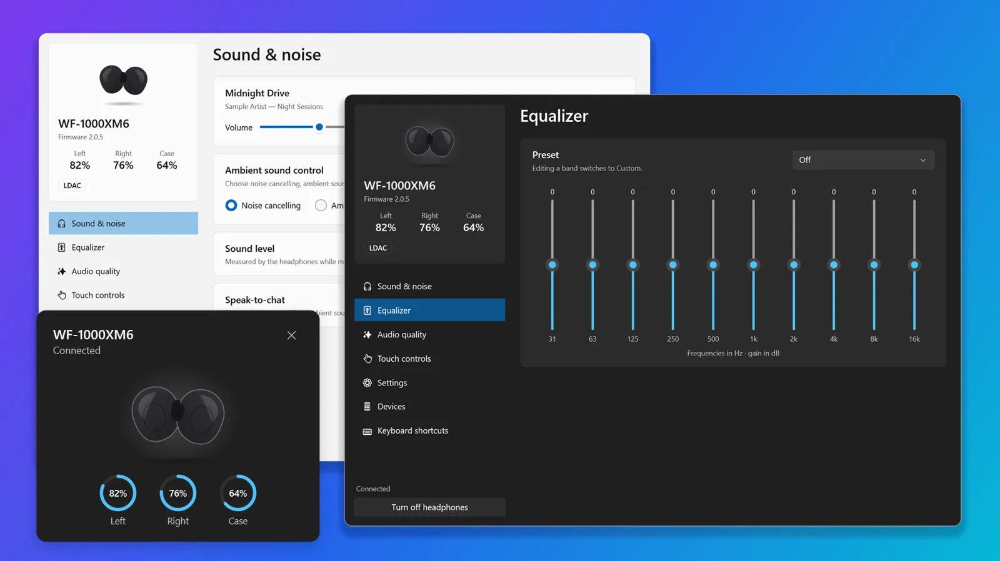
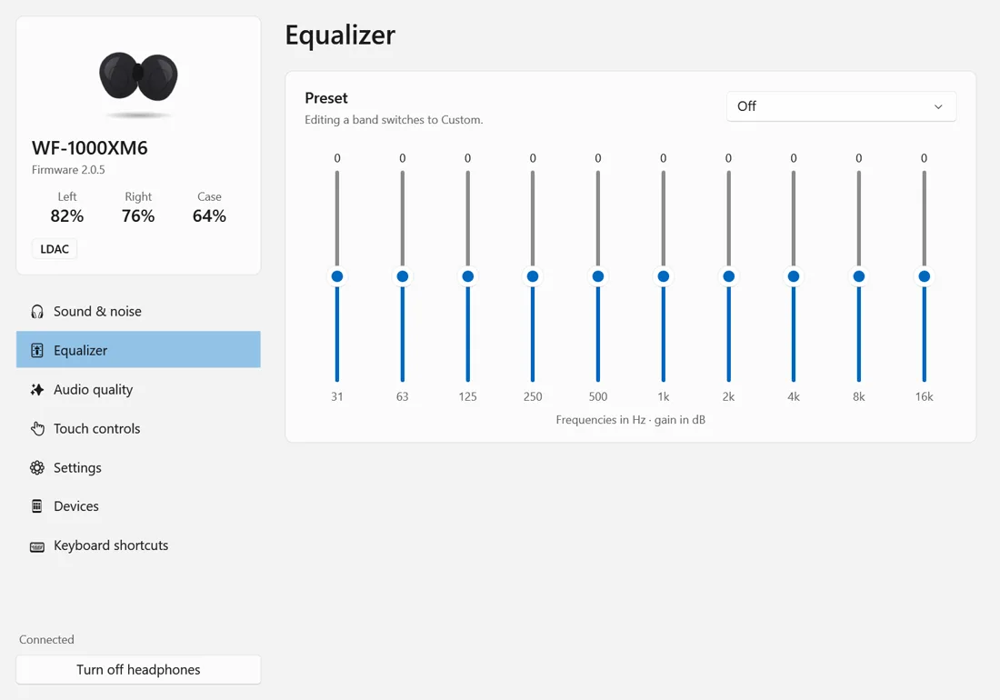
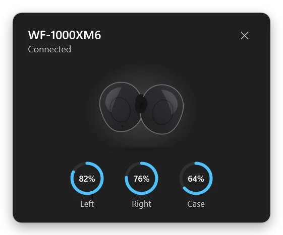
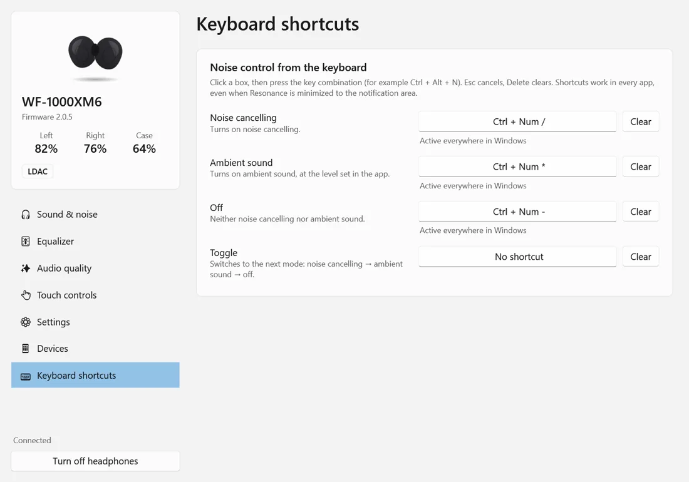
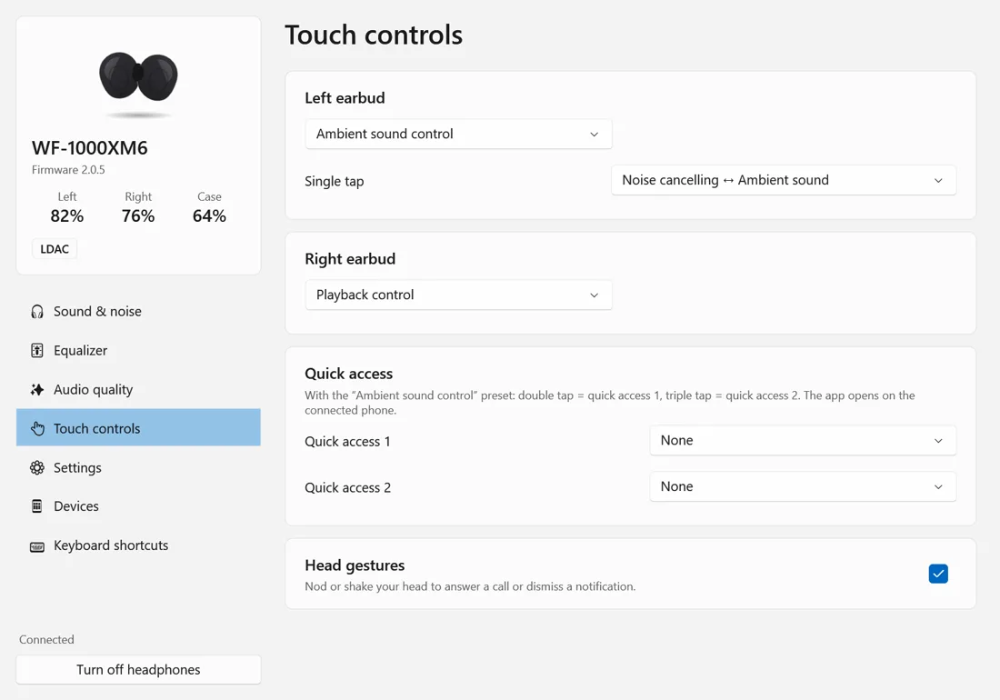
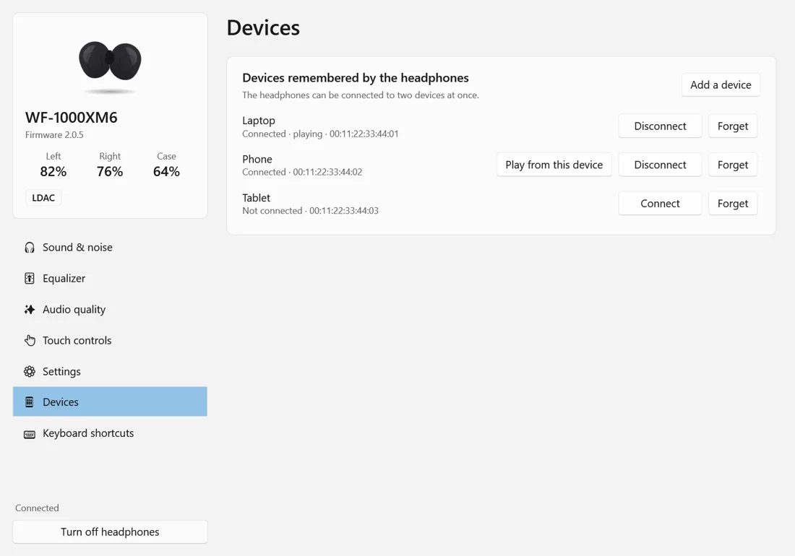

Control Sony headphones from your Windows PC
Sony's Sound Connect only runs on phones. Resonance, a free independent app, brings its main settings to Windows.

The settings you open your phone for
Resonance asks your headphones what they support and only shows those settings.
Equalizer
Presets and custom curves, with the bands your model offers.

Battery and noise control
Noise cancelling, ambient sound with level and voice focus, and the battery of each earbud and the case, from the taskbar.

Keyboard shortcuts
Switch noise modes with a global shortcut, in every app.

Touch controls
Presets, gestures, quick access and head gestures.

Multipoint devices
Connect, disconnect and switch devices, or pin playback to the current one.

Sound
- DSEE Extreme and connection priority
- Background music and voice boost
- Live sound level measured by the headphones
- Speak-to-chat on models that offer it
Windows
- Quick settings from the notification area icon, which shows the current mode
- Light and dark themes, in English and French
- Starts with Windows and stays small when disconnected
- Nothing to install, no account
Scriptable from the command line
Change modes, read the battery or switch devices from a terminal, a script or a Stream Deck button.
# battery, mode, codec, now playing
resonance-cli status
# ambient sound, level 12
resonance-cli ambient 12
# equalizer preset
resonance-cli eq heavy
# switch device
resonance-cli connect phoneSupported Sony headphones
Fully tested
WF-1000XM6
Every setting tested on the device.
Checked
WF-1000XM5, LinkBuds Clip, WH-1000XM3
Checked against recorded sessions. Changing settings is not yet confirmed by an owner.
Should work
WH-1000XM4, WH-1000XM5, WH-1000XM6, WF-1000XM4, WF-C700N, other LinkBuds
Same protocols, not confirmed yet. Help confirm yours.
Ready in a minute
- PairPair your headphones in Windows Bluetooth settings and connect them.
- UnzipDownload the zip and unzip it anywhere. There is nothing to install.
- RunOpen Resonance.exe. It finds your headphones by itself.
Requires Windows 10 (1809) or later. The app is not code-signed yet, so SmartScreen may ask you to confirm the first launch.
Frequently asked questions
Is there a Sony Sound Connect app for PC?
Sony publishes Sound Connect, formerly Headphones Connect, for Android and iPhone only. Resonance is an independent Windows app that brings its main settings to your PC.
Do I need BlueStacks or another Android emulator?
No. Resonance is a native Windows app that talks to the headphones over Bluetooth. You do not need an emulator, a phone or a Sony account.
Which Sony headphones work with Resonance?
Every setting has been tested on the WF-1000XM6. The WF-1000XM5, LinkBuds Clip and WH-1000XM3 were checked against recorded sessions. The WH-1000XM4, WH-1000XM5, WH-1000XM6, WF-1000XM4, WF-C700N and other LinkBuds use the same protocols and should work, but are not confirmed yet.
Is Resonance free?
Yes, for personal and other noncommercial use, under the PolyForm Noncommercial License 1.0.0. The source code is public on GitHub. Commercial use needs the author's permission.
Can I keep Sound Connect on my phone?
Yes. Headphones accept one control app at a time, so Resonance lets go of them after a few minutes without use and takes them back when you need it. You can also hand them to the phone right away.
Can Resonance update the firmware?
No. Firmware files come from Sony's servers, so keep using the phone app for updates.
Why does Windows show a SmartScreen warning?
The app is not code-signed yet. Choose More info, then Run anyway. The source code and the build workflow are public on GitHub.